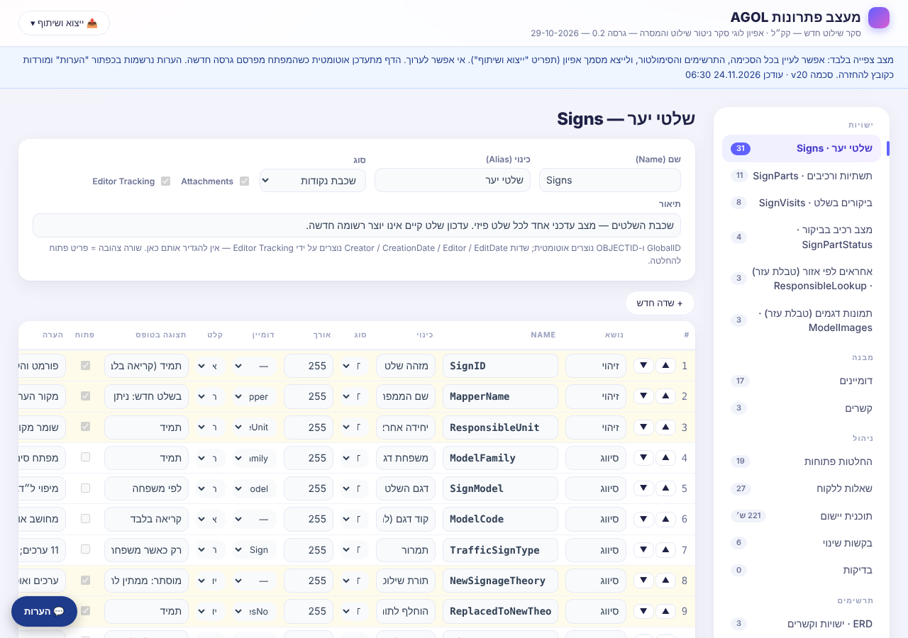
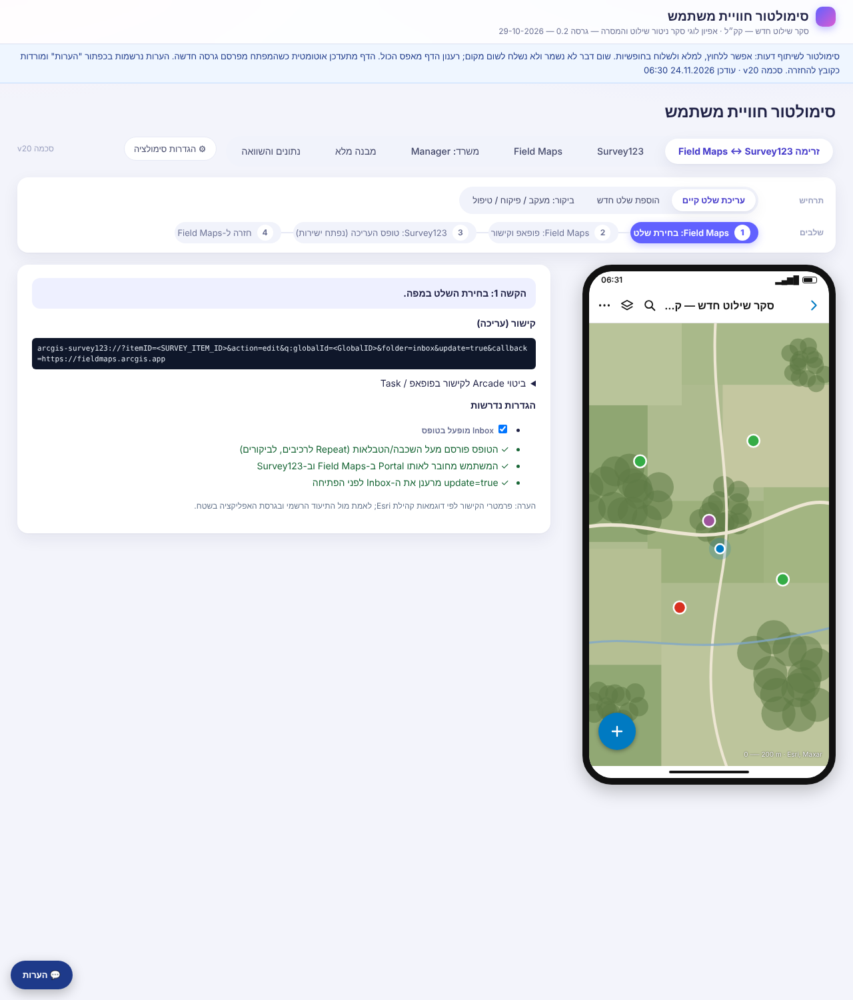
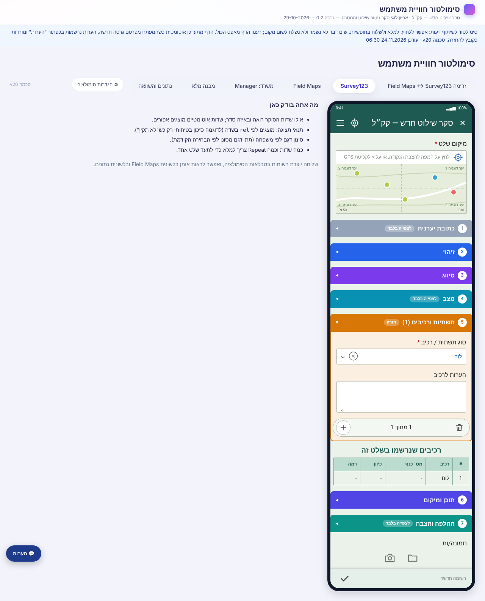
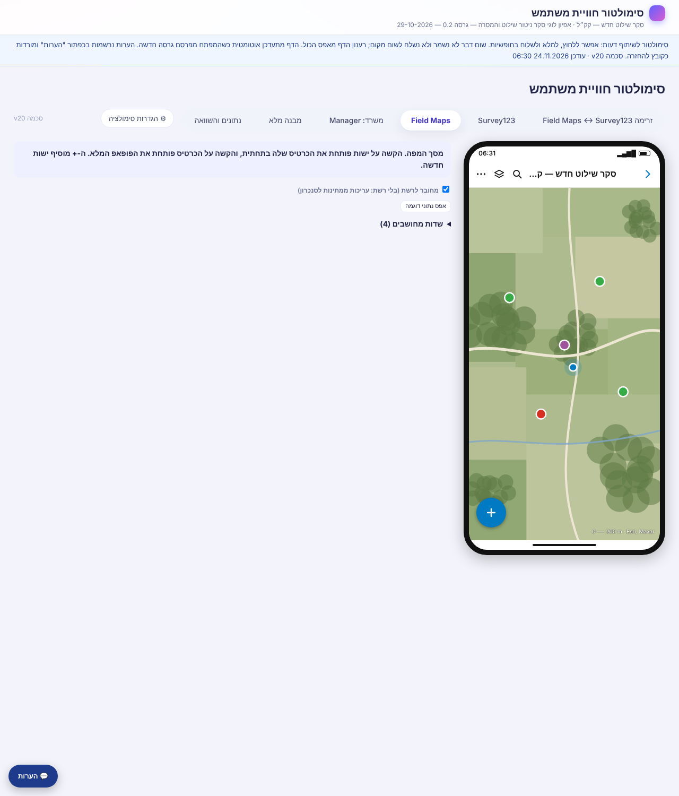

הכלי מאפשר לתכנן סכמת נתונים של ArcGIS Online (שכבות, טבלאות, דומיינים, קשרים), להתנסות בטופס לפני הפיתוח בסימולטור, ולהפיק קבצי פיתוח (XLSForm ל-Survey123 Connect, סקריפט ArcPy ועוד).
הכלי נפתח בדפדפן, ללא התקנה. שני אופני גישה:
?view=signage. אפשר לעיין בסכמה, בהתרשימים ובסימולטור, ולהוריד מסמך אפיון. אי אפשר לערוך.?sim=signage. מיועד לשיתוף עם שותפים לצורך ניסוי בטופס.
לכל ישות מוצגים השם, הכינוי, הסוג והשדות שלה. לכל שדה: סוג, אורך, דומיין, והתצוגה בטופס (תמיד / לפי תנאי / קריאה בלבד). שדות המסומנים בצהוב הם שדות חובה. שדות מערכת (GlobalID, Editor Tracking) נוצרים אוטומטית ואין להגדירם.
לשונית הסימולטור מחקה את החוויה בשטח, ללא צורך בפרסום. כך אפשר לבדוק את הלוגיקה לפני שמפתחים.

הסימולטור מחקה את הטופס המעודכן: כותרת וסרגל תחתון בצבעי הערכה, מיקום השלט, כרטיס כתובת יערנית לצפייה בלבד, וקבוצות צבעוניות.

במפה בוחרים שלט, ובפופאפ יש קישור לפתיחת טופס Survey123 לעריכה, לפי הקישור המוצג בשלב הראשון בזרימה.

הכפתור "הערות" (בפינה השמאלית התחתונה) מאפשר לרשום הערה על כל מסך. ההערות נשמרות בדפדפן וניתן להוריד אותן כקובץ ולהחזיר אותן למעצב. החלטות פתוחות ושאלות ללקוח מנוהלות בלשוניות החלטות פתוחות ושאלות ללקוח.
הכפתור "ייצוא ושיתוף" מפיק: קובץ XLSForm ל-Survey123 Connect, סקריפט ArcPy, מילון נתונים ומסמך אפיון. לפני שמעלים ל-Connect מומלץ להריץ את כלי העדכון של Esri (xlsform_template_updater.py) על הקובץ.